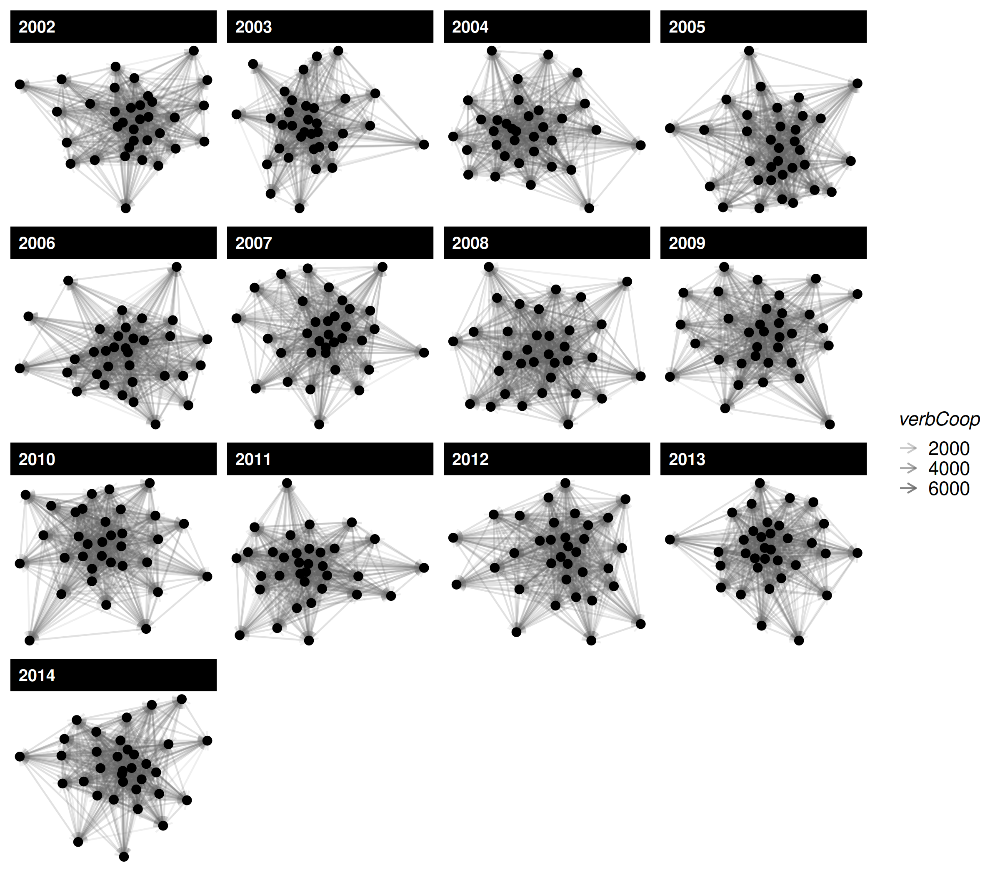
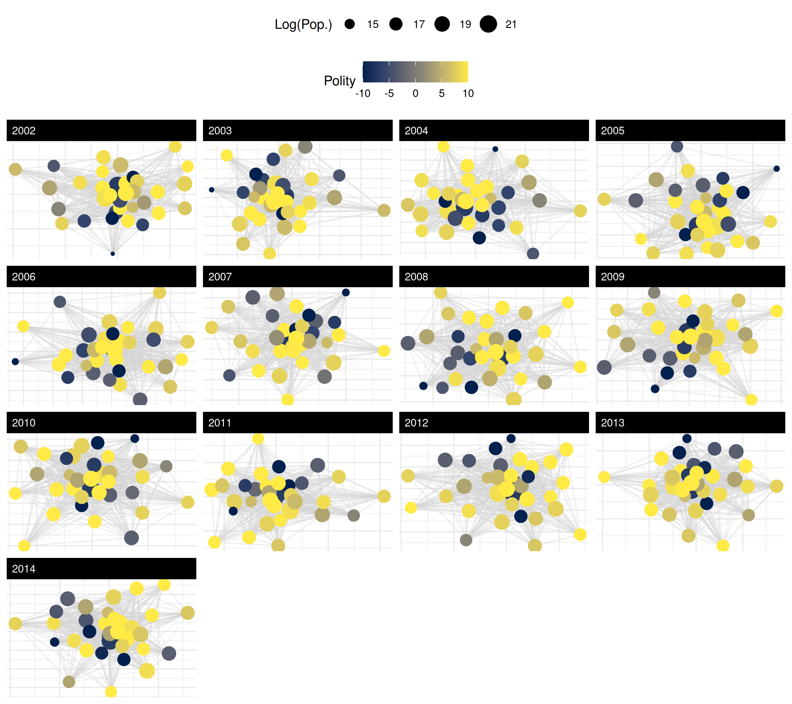
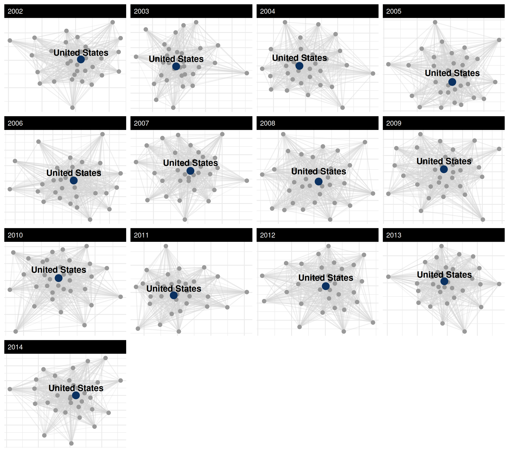

Manual Plotting with ggplot2
Cassy Dorff and Shahryar Minhas
2026-06-25
Source:vignettes/manual_plotting.Rmd
manual_plotting.Rmdtl;dr
plot.netify() handles 90% of cases out of the box. This
vignette is for the other 10% — when you want full control over
geometry, layout, or combinations of color scales that the built-in path
doesn’t expose. We cover extracting node and edge data, layering them
with ggplot2, highlighting a single actor, layering
multiple color scales, applying a ggplot theme, and exporting with
ggsave().
This vignette provides an overview of how to create customizable
plots using ggplot2 while still using netify
to prepare the data.
Let’s load the necessary libraries.
##
## Attaching package: 'dplyr'## The following objects are masked from 'package:stats':
##
## filter, lag## The following objects are masked from 'package:base':
##
## intersect, setdiff, setequal, unionThe advanced sections also use dplyr (for data
manipulation) and ggnewscale (for multiple color
legends).
preparing data
First let’s create a netlet object from some dyadic data
(ICEWS data) using the netify package.
# load icews data
data(icews)
# choose attributes
nvars <- c("i_polity2", "i_log_gdp", "i_log_pop")
dvars <- c("matlCoop", "verbConf", "matlConf")
# create a netify object
netlet <- netify(
icews,
actor1 = "i", actor2 = "j",
time = "year",
symmetric = FALSE, weight = "verbCoop",
mode = "unipartite", sum_dyads = FALSE,
actor_time_uniform = TRUE, actor_pds = NULL,
diag_to_NA = TRUE, missing_to_zero = TRUE,
nodal_vars = nvars,
dyad_vars = dvars
)
# subset to a few actors
actors_to_keep <- c(
"Australia", "Brazil",
"Canada", "Chile", "China",
"Colombia", "Egypt", "Ethiopia",
"France", "Germany", "Ghana",
"Hungary", "India", "Indonesia",
"Iran, Islamic Republic Of",
"Israel", "Italy", "Japan", "Kenya",
"Korea, Democratic People's Republic Of",
"Korea, Republic Of", "Nigeria", "Pakistan",
"Qatar", "Russian Federation", "Saudi Arabia",
"South Africa", "Spain", "Sudan",
"Syrian Arab Republic", "Thailand",
"United Kingdom", "United States",
"Zimbabwe"
)
netlet <- subset_netify(
netlet,
actors = actors_to_keep
)
# print
netlet## ✔ Network data created.
## • Unipartite
## • Asymmetric
## • Weights from `verbCoop`
## • Longitudinal: 13 Periods
## • # Unique Actors: 34
## Network Summary Statistics (averaged across time):
## dens miss mean recip trans
## verbCoop 0.887 0 202.7 0.978 0.928
## • Nodal Features: i_polity2, i_log_gdp, i_log_pop
## • Dyad Features: matlCoop, verbConf, matlConfThis is a longitudinal, weighted network with nodal and dyadic attributes. In a few more steps we will show how to highlight these attributes in the plot.
quick start: just plot(net)
Before reaching for ggplot2 directly, remember that the
fastest path to a network plot is the built-in plot()
method. It picks a layout, draws edges, points, and (for small networks)
auto-repelling labels, and returns a ggplot object you can
keep customizing with + layers. Add
theme_publication_netify() to apply the netify theme:
# one-liner -- works for cross-sectional or longitudinal netify objects
set.seed(6886)
plot(netlet) + theme_publication_netify()
That single call is usually enough for a first look. The rest of this
vignette shows what to do when you want finer control
over the underlying data and layers — for example, swapping the layout
algorithm, adding edge-level information that the default plot doesn’t
expose, or combining multiple color scales with
ggnewscale.
going manual: extract the plot data frames
When you need that finer control, use net_plot_data to
create a data frame for ggplot2. net_plot_data
extracts and sets up node and edge data from a netify
object according to specified plotting arguments. It returns a list of
different components but the most important one for users is the
net_dfs element. This element contains two objects:
edge_data and nodal_data. These are data
frames that can be passed to ggplot2.
# create a data frame for plotting
set.seed(6886)
plot_data <- net_plot_data(netlet)
# get relevant dfs
net_dfs <- plot_data$net_dfs
# check structure of what's here
str(net_dfs)## List of 2
## $ edge_data :'data.frame': 12937 obs. of 11 variables:
## ..$ from : chr [1:12937] "Australia" "Australia" "Australia" "Australia" ...
## ..$ to : chr [1:12937] "Brazil" "Canada" "Chile" "China" ...
## ..$ time : chr [1:12937] "2002" "2002" "2002" "2002" ...
## ..$ verbCoop: num [1:12937] 3 24 1 518 1 15 28 42 1 61 ...
## ..$ matlCoop: num [1:12937] 0 1 0 15 0 0 3 2 0 0 ...
## ..$ verbConf: num [1:12937] 0 3 0 43 6 2 11 1 0 3 ...
## ..$ matlConf: num [1:12937] 0 3 1 3 0 4 0 6 0 3 ...
## ..$ x1 : num [1:12937] -0.0576 -0.0576 -0.0576 -0.0576 -0.0576 ...
## ..$ y1 : num [1:12937] 0.132 0.132 0.132 0.132 0.132 ...
## ..$ x2 : num [1:12937] 0.25671 0.03958 0.22088 -0.00051 0.25814 ...
## ..$ y2 : num [1:12937] 0.061 -0.1548 0.2778 0.0518 -0.0817 ...
## $ nodal_data:'data.frame': 442 obs. of 10 variables:
## ..$ name : chr [1:442] "Australia" "Australia" "Australia" "Australia" ...
## ..$ time : chr [1:442] "2002" "2003" "2004" "2005" ...
## ..$ i_polity2 : int [1:442] 10 10 10 10 10 10 10 10 10 10 ...
## ..$ i_log_gdp : num [1:442] 27.6 27.6 27.6 27.7 27.7 ...
## ..$ i_log_pop : num [1:442] 16.8 16.8 16.8 16.8 16.8 ...
## ..$ x : num [1:442] -0.0576 0.1062 -0.1676 0.0248 0.0547 ...
## ..$ y : num [1:442] 0.1316 -0.0741 0.0391 -0.1551 0.1232 ...
## ..$ name_text : chr [1:442] "Australia" "Australia" "Australia" "Australia" ...
## ..$ name_label: chr [1:442] "Australia" "Australia" "Australia" "Australia" ...
## ..$ id : chr [1:442] "Australia_2002" "Australia_2003" "Australia_2004" "Australia_2005" ...
# check the first few rows of the edge data
head(net_dfs$edge_data)## from to time verbCoop matlCoop verbConf matlConf x1
## 1 Australia Brazil 2002 3 0 0 0 -0.05761221
## 2 Australia Canada 2002 24 1 3 3 -0.05761221
## 3 Australia Chile 2002 1 0 0 1 -0.05761221
## 4 Australia China 2002 518 15 43 3 -0.05761221
## 5 Australia Colombia 2002 1 0 6 0 -0.05761221
## 6 Australia Egypt 2002 15 0 2 4 -0.05761221
## y1 x2 y2
## 1 0.1316246 0.2567066471 0.06102817
## 2 0.1316246 0.0395816516 -0.15478831
## 3 0.1316246 0.2208771149 0.27780000
## 4 0.1316246 -0.0005098899 0.05176884
## 5 0.1316246 0.2581434830 -0.08165964
## 6 0.1316246 -0.0063939248 -0.10525516
# check the first few rows of the nodal data
head(net_dfs$nodal_data)## name time i_polity2 i_log_gdp i_log_pop x y
## 79 Australia 2002 10 27.55492 16.78568 -0.05761221 0.13162457
## 80 Australia 2003 10 27.58556 16.79718 0.10621976 -0.07408432
## 81 Australia 2004 10 27.62686 16.80787 -0.16761260 0.03905379
## 82 Australia 2005 10 27.65791 16.82005 0.02483645 -0.15514885
## 83 Australia 2006 10 27.68495 16.83354 0.05468896 0.12317962
## 84 Australia 2007 10 27.72203 16.85179 0.03834328 -0.11702110
## name_text name_label id
## 79 Australia Australia Australia_2002
## 80 Australia Australia Australia_2003
## 81 Australia Australia Australia_2004
## 82 Australia Australia Australia_2005
## 83 Australia Australia Australia_2006
## 84 Australia Australia Australia_2007The x and y in nodal_data and
the x1, y1, x2, and
y2 in edge_data are the coordinates of the
nodes and edges, respectively. These are the coordinates that will be
used to plot the network.
creating a plot
Now that we have the data, we can create a plot using
ggplot2. We’ll use geom_segment and
geom_point (or geom_label,
geom_text, and the ggrepel equivalents) to
plot the edges and nodes, respectively.
ggplot() +
geom_segment(
data = net_dfs$edge_data,
aes(
x = x1,
y = y1,
xend = x2,
yend = y2
),
color = "lightgrey",
alpha = .2
) +
geom_point(
data = net_dfs$nodal_data,
aes(
x = x,
y = y,
size = i_log_pop,
color = i_polity2
)
) +
labs(
color = "Polity",
size = "Log(Pop.)"
) +
scale_color_viridis_c(option = "cividis") +
facet_wrap(~time, scales = "free") +
theme_netify()
Note scale_color_viridis_c(option = "cividis") — a
colorblind-safe perceptually-uniform palette. For continuous variables
this is almost always a better default than a hand-picked two-color
gradient.
changing the layout
By default layouts for node positions are drawn from the
layout_nicely algorithm in the igraph package.
Users can specify other layouts as, for example, say that you wanted to
use the mds algorithm instead:
# build layout data with mds
set.seed(6886)
plot_data_mds <- net_plot_data(
netlet,
list(
layout = "mds"
)
)
# see new x-y coordinates
lapply(plot_data_mds$net_dfs, head)## $edge_data
## from to time verbCoop matlCoop verbConf matlConf x1
## 1 Australia Brazil 2002 3 0 0 0 -0.3548545
## 2 Australia Canada 2002 24 1 3 3 -0.3548545
## 3 Australia Chile 2002 1 0 0 1 -0.3548545
## 4 Australia China 2002 518 15 43 3 -0.3548545
## 5 Australia Colombia 2002 1 0 6 0 -0.3548545
## 6 Australia Egypt 2002 15 0 2 4 -0.3548545
## y1 x2 y2
## 1 -0.1680305 -0.72811128 0.36196590
## 2 -0.1680305 -0.03316817 -0.05312512
## 3 -0.1680305 -0.65201941 0.27166650
## 4 -0.1680305 -0.03316817 -0.05312512
## 5 -0.1680305 -1.22997412 -0.06398966
## 6 -0.1680305 0.36325222 0.13977670
##
## $nodal_data
## name time i_polity2 i_log_gdp i_log_pop x y
## 79 Australia 2002 10 27.55492 16.78568 -0.35485450 -0.16803048
## 80 Australia 2003 10 27.58556 16.79718 0.20857397 -0.12705283
## 81 Australia 2004 10 27.62686 16.80787 -0.04224981 0.05123628
## 82 Australia 2005 10 27.65791 16.82005 -0.06014447 -0.02708750
## 83 Australia 2006 10 27.68495 16.83354 0.15073774 0.46114648
## 84 Australia 2007 10 27.72203 16.85179 -0.03161665 -0.03885021
## name_text name_label id
## 79 Australia Australia Australia_2002
## 80 Australia Australia Australia_2003
## 81 Australia Australia Australia_2004
## 82 Australia Australia Australia_2005
## 83 Australia Australia Australia_2006
## 84 Australia Australia Australia_2007highlighting a single actor
A common task: label or visually pop one specific actor in the plot.
With the built-in plot.netify() you can do this directly
via highlight = "United States" plus
select_text / select_text_display:
set.seed(6886)
plot(netlet,
highlight = "United States",
highlight_color = c("United States" = "#0A3161", "Other" = "grey70"),
select_text = "United States",
select_text_display = "United States",
time_filter = "2010"
) +
theme_publication_netify()
If you are assembling the plot manually from
net_plot_data(), the same effect is one extra layer — flag
the focal actor in nodal_data and add a
geom_text (or ggrepel::geom_text_repel) layer
just for it. Note that net_plot_data() stores actor names
in the column called name:
focal <- "United States"
nodal_focal <- subset(net_dfs$nodal_data, name == focal)
ggplot() +
geom_segment(
data = net_dfs$edge_data,
aes(x = x1, y = y1, xend = x2, yend = y2),
color = "lightgrey", alpha = .2
) +
geom_point(
data = net_dfs$nodal_data,
aes(x = x, y = y),
color = "grey60", size = 2
) +
geom_point(
data = nodal_focal,
aes(x = x, y = y),
color = "#0A3161", size = 4
) +
geom_text(
data = nodal_focal,
aes(x = x, y = y, label = name),
nudge_y = .05, fontface = "bold"
) +
facet_wrap(~time, scales = "free") +
theme_netify()
add edge information
So far, we have focused on using color to convey information about
nodal attributes in the network (population size and polity score). Now,
let’s add more edge information to the plot. For example, we can include
information about the matlConf dyadic attribute. Imagine we
want to highlight edges of verbal cooperation that occur at the same
time as when higher than average levels of material conflict occur in
the network. First, let’s create the variable in the edge data.
# create high_matlconf variable
net_dfs$edge_data <- net_dfs$edge_data |>
group_by(time) |>
mutate(
high_matlConf = matlConf > mean(matlConf, na.rm = TRUE)
) |>
ungroup() |>
as.data.frame()
# check
head(net_dfs$edge_data)## from to time verbCoop matlCoop verbConf matlConf x1
## 1 Australia Brazil 2002 3 0 0 0 -0.05761221
## 2 Australia Canada 2002 24 1 3 3 -0.05761221
## 3 Australia Chile 2002 1 0 0 1 -0.05761221
## 4 Australia China 2002 518 15 43 3 -0.05761221
## 5 Australia Colombia 2002 1 0 6 0 -0.05761221
## 6 Australia Egypt 2002 15 0 2 4 -0.05761221
## y1 x2 y2 high_matlConf
## 1 0.1316246 0.2567066471 0.06102817 FALSE
## 2 0.1316246 0.0395816516 -0.15478831 FALSE
## 3 0.1316246 0.2208771149 0.27780000 FALSE
## 4 0.1316246 -0.0005098899 0.05176884 FALSE
## 5 0.1316246 0.2581434830 -0.08165964 FALSE
## 6 0.1316246 -0.0063939248 -0.10525516 FALSENow that we have the new variable in the data.frame, we can plot by
it but note that we now need a color aesthetic for both points and
segments, even though ggplot2 only supports one legend by
aesthetic by default. We can get around this by using the
new_scale_color function from the ggnewscale
package.
# color line segments by this new variable
ggplot() +
geom_segment(
data = net_dfs$edge_data,
aes(
x = x1,
y = y1,
xend = x2,
yend = y2,
color = high_matlConf
),
alpha = .2
) +
scale_color_manual(
name = "",
values = c("grey", "red"),
labels = c("Below Avg. Matl. Conf", "Above Avg.")
) +
new_scale_color() +
geom_point(
data = net_dfs$nodal_data,
aes(
x = x,
y = y,
size = i_log_pop,
color = i_polity2
)
) +
scale_color_viridis_c(name = "Polity", option = "cividis") +
labs(
size = "Log(Pop.)"
) +
facet_wrap(~time, scales = "free") +
theme_publication_netify() +
theme(legend.position = "right")
saving and exporting figures
Once a plot is laid out the way you want, export it with
ggsave(). The function writes whatever ggplot was last
printed (or whichever ggplot object you pass via plot=) to
disk. A vector format (PDF or SVG) holds up at any size; for the web a
PNG at 300 dpi is fine.
# last plot rendered
ggsave("icews_network.pdf", width = 9, height = 8)
# or pass an explicit plot object
p <- plot(netlet, time_filter = "2010") + theme_publication_netify()
ggsave("icews_2010.png", plot = p, width = 7, height = 6, dpi = 300)colorblind-safe palette guidance
A quick reference for picking colors that survive both colorblindness and grayscale printing:
-
Continuous variables — use
scale_color_viridis_c()/scale_fill_viridis_c(). Theviridis,magma,plasma, andcividisoptions are all perceptually uniform and colorblind-safe;cividisis the safest for the broadest set of color vision deficiencies and also prints well in black & white. -
Categorical variables (≤8 levels) — use
ColorBrewer’s
Set2,Dark2, orPaired. Passpalette = "Set2"toscale_color_brewer(), ornode_color_palette = "Set2"toplot.netify(). -
Two-class highlights — pair a strong color with
neutral grey, as in the United States highlight example above
(
#0A3161vsgrey70).
references
Boschee, Elizabeth; Lautenschlager, Jennifer; O’Brien, Sean; Shellman, Steve; Starz, James; Ward, Michael, 2015, ``ICEWS Coded Event Data’’, doi:10.7910/DVN/28075 , Harvard Dataverse.
Pedersen, T. L. (2020). ggnewscale: Multiple Fill and Colour Scales in ‘ggplot2’. R package version 0.4.3. https://CRAN.R-project.org/package=ggnewscale
Wickham, H. (2016). ggplot2: Elegant Graphics for Data Analysis. Springer-Verlag New York.